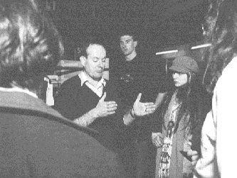
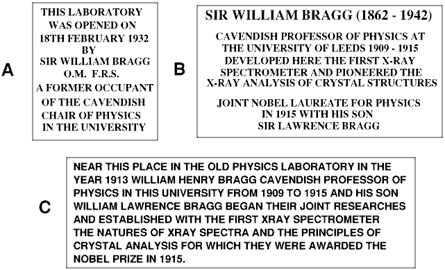
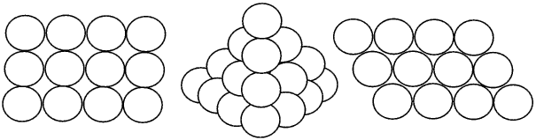

Puzzles from 'Crystallography News' in this file:
You may submit as many entries as you wish, and are encouraged to add appropriate illustrations. The winning entry will be published in the next issue, with as many others as space permits.
Page last updated 19 May 1995
Entries should be sent with your name, age, and
address to: ESRF, X-ray Competition, BP220, F-38043 Grenoble cedex, France.
before 30 September 1995 A jury of European scientists and journalists will select the 12 best entries. Winners will be invited to Grenoble for 3 days (24-26 Nov 1995) when they will visit the ESRF and associated laboratories, follow an experiment carried out by a large industrial firm and be able to perform an experiment themselves under the guidance of ESRF scientists.
Additional information will be sent on request to the ESRF ( address above)
A prize of a £10.00 book token is offered for the longest list of words which can be made from the letters of the 2 words: 'CRYSTALLOGRAPHY NEWS'.
Please list your words in alphabetical order to simplify checking. Send your
entries to the editor of 'Crystallography News', P.O.Box 64, Didcot,
Oxon OX11 0SE
or via email to BCA@ISISE.RL.AC.UK
Rules:
1. Words must have at least 7 letters
2. Words must be in the 'Concise Oxford Dictionary'
3. Plurals made by adding an 's' will be ignored
4. In the event of a tie, the entry with the longest word will win
5. Last date for entries: 3rd November 1995
6. Editor's decision is final. No correspondence will be entered into.
Suggestions for other Competitions welcomed. I have a few ideas, but am happy to consider yours. A £10 Book Token will be awarded for all published competitions.
Peter Seymour of the Russell Society has compiled this devilishly hard word square for your amusement. (Yes, I do know it is not square!) A prize of £10 is offered for the first correct solution received by the editor. If you fancy a challenge, try finding the 44 minerals and elements without looking at the list below. The usual rules apply, letters must be adjacent running in one direction, but they can be read forwards, backwards, or diagonally.
B L E N D E T I L E Y A H L E D M L E D I O P S I D E V E T Y A E C E T I R U C O P P N T O F L D I A P A X I T E R L Z I P E Y R U K L I H A L I T E I N A O I D I R U C D Z E S H W U R Z I T E B A O Y I O Y B N I I A C E E O D E I J T T M R O K A L J T O R B E R N I T E E U R D O K I F L F E R Y N R R T L C A A L M I S I Z R R L J O O I A R X W U A E T T I M U L A N C L N E E I Q N R X E N O T I M E R O E M T Q U I V E L C R I W U L A Y M A Y I K T R A M U I L E T S S R L O R H N E P U B E T E T P O I C E T A C U O Z Y A T E R I U F T L A D B I A L I T E K T N B R I E A D L O G E T I R O N E T L U J A T E T I Y B X I B E L G U A T S P E
Note : although individual letters may be in more than one word, the whole
word should not be contained within another;
'iron' can be found spelt
backwards in 'tenorite' but that is not the
correct solution.
borax zinc opal iron rutile
lead dalyite erionite albite
delhayelite phenakite latiumite ruby mercury
tenorite torbernite wad jade xenotime
yttrocrasite halite emerald tin wurzite
calcite lepidomelane baryte wilkmanite gold
spinel beryl zircon bialite topaz
larnite diopside blende bixbyite cryolite
tobermorite paxite talc curite alum
I enjoyed this word square myself. You try it!
This is a multi-part competition:
Send your entries to the editor by 4th May 1996.
Deadlinefor entries: First post (snail mail) 1st November 1996
Now look at the diagram in the box and decide where you can place a mirror to see each of the numbered patters. The Competition is to draw the mirror lines on the boxed diagram for those which you think can be made, and decide which ones are impossible. If you want a real challenge, do it without the mirror. A prize of a £10 book token is offered to the first correct entry picked out of a hat on 8th February 1997. Send you entries to the editor at the address overleaf.
I am grateful to Marion Walters for permission to reproduce this puzzle from her collection in 'The Mirror Puzzle Book', available from Tarquin Publications, Stradbroke, Diss, Norfolk, IP21 5JP, tel: (01379) 384 218 price £2.70 if you would like to try more puzles.
What is Bob Cernik (DL) saying? A prize of a £10 book token is
offered for the best caption received by the editor before 2nd May 1997.
Send your entries to the address overleaf; a selection of the entries will
be printed in the next newsletter.

Photo courtesy of CRLC newsletter.
Leeds walkabout:
Those of you who are coming to the
Annual BCA meeting in April, may like to take a little exercise at the lunch
breaks and search for these memorial tablets which are all on the campus.
Thanks to Mark Thornton-Pett for finding them all.

On 28 June 1997 the 'New Scientist' published an article stating
that in 1611 Kepler wrote a paper concluding that the most efficient way to
stack cannonballs was in what we now call a face centred cubic lattice.

(page 30 'Packing them in' by Simon Singh a TV producer) Apparently Kepler merely stated that this arrangement was the best one he had found; after nearly 400 years some people are still trying to prove there is no other more efficient one. This was a great surprise to me, since I assumed it had been proved long ago. Do you know of any attempts to prove it? A £10 book token is offered for the best explanation of how people have tried to prove it, or a list of references to published papers on the topic. Replies to the editor at the address on the next page by the deadline for publication of the next issue.
Editor's Note: Although the deadline above is long past I am always happy to receive news of educational sites. Please send them to the
BCA Home page WebMaster BCA@ISISE.RL.AC.UK at any time
Authors happily use three letter acronyms (TLAs) in their articles without
realising that their readers may not all be familiar with the meanings. The
list below contains common (?) abbreviations with 3, 4 or even 5 letters,
which have all appeared in 'Crystallography News', and one which the author
assures me is a trade name, so he cannot define it.
The competition is
to identify the 'trade name' and define the others. In the event of a tie,
preference will be given to those who produce several definitions for the
same TLA, preferably associated with crystallography in some way. (There is
one of these in this issue.) Credit will also be given for additional
appropriate TLAs and their definitions to form a glossary for use by the
editor and future authors of 'Crystallography News'.
AERE, AGM, BBSRC, BCA, BSG, CCDC, CCG, CCLRC, CD, CIF, CLRC, CP/MAS, DL, DOS, DSC, ECA, ECC, ECM, EPS, EPSRC, EXAFS, GMR , HRPD, HSE, HTML, ICDD, ICI, IG, ILL, IOP, ISBN, ISO, IUCr, IUPAC, LAD, MAD, MRC, MRD, NMR, ODF, PC, PCG, PDB, PDF. PR, PSD, RAL. RISC, RSC, SAXS, SERC, SRC, STM, TGA, UV, WAXS, WWW, XAFS, XANES, XRD, XRF
Entries to the editor at the address overleaf by 7th August 1998. To
simplify an electronic entry you can find the list on the BCA web site in
the section on 'Crystallography News' at URL
http://gordon.cryst.bbk.ac.uk/BCA/CNews/TLAs.html. The prize is a £10
book token.
Editors' note: This is a continual problem, please look at the list, or any isue of 'Crystallography News' critically and tell me of further meanings for and TLAs you find. 31 March 99
Since there were no entries for the last competition, 'Define the TLAs', I have decided to 'roll-over' the prize because I need your help and advice. The winner of this competition will receive a £20 book token. On an earlier page I explained that I am preparing a list of UK scientists, either crystallographers, or people without whom crystallography today would be very different. The winner will be the person who submits the best list to me at the address overleaf by 6th November 1998. For each scientist give as complete a name as possible, relevant dates, birth, death, when they did the work (approximately), a sentence explaining why they are listed, and location(s) associated with them or their work. I hope to turn this into a UK tourist guide to crystallographic sites. Any extra information is welcome, for example an OS Grid Reference to enable people to find the location, telephone numbers of museums, a bibliographic reference to the work done, or the URL of a Web site for further information, etc.
A Mineral Quiz on calcite and calcareous rocks.
1. Carbonates, such as calcite, can be identified by the application of a small drop of dilute hydrochloric acid. This causes the mineral to:
a. Change colour. b. Fizz or effervesce. c. Smell of garlic.
2. Chalk is formed mainly from the calcite skeletons of millions of tiny sea creatures.
What are these fossils called. a. Coccoliths. b. Cockerels. e. Cocoons.
3. When a piece of calcite is broken it forms crystals which display a perfect cleavage. What shape are these crystals? a. Cubic. b. Rhombohedral. c. Hexagonal.
4. The softest mineral is talc, with a hardness of 1, and the hardest is diamond with a hardness of 10. Where does calcite come in the Moh's Scale of Hardness.? a.3. b.5. c.8.
5. Which of these rocks is formed from calcite? a. Granite. b. Limestone. c. Slate.
6. The chemical composition of calcite is calcium carbonate. Which of these is the correct chemical formula? a. CaSO4 b.CaCO3 c.BaCO3
7. When a calcareous rock is metamorphosed it forms? a.Slate. b.Basalt. c.Marble.
8. Fossilferous limestone is often formed from the calcareous remains of
extinct animals some of which are over 500 million years old.
Where did these animals live? a. In the forest b. In
the ground. c. ln the sea.
9. Structures often form on the roofs of limestone caves from dripping water
rich in calcium carbonate dissolved from the overlying rocks. What is the
name of these structures?
a. Stalagmites.
b.Stagnates. c. Stalactites.
10. What is the name of the small rounded grains in some limestones which are formed by the deposition of calcium carbonate in successive layers around a small nuclei? a.Ooliths. b.Oodles. c. Otoliths.
This month's competition is about rocks to draw your attention to the
BBC TV series about geology and it's accompanying website at
http://www.bbc.co.uk/education/rocks I am grateful to the
South East Branch of the Russell Society (tel (0181) 650 5566) for a copy of
the questions and permission to reprint them here. They were used in
conjunction with an educational exhibit on minerals during the National
Science Week in March 1998. Entries to the Editor at the address overleaf by
5th Feb 1999. A prize of a £10 book token is offered for the 1st
correct entry drawn out of a hat by an eminent crystallographer.
C D I C R F O L A C O R P I C E R Z Y I
G I E N I L F F A C E C E N T R E D U K
U L N K V N T E T R A G O N A L N Z X K
Z A I I C E O W I G D R O T A T I O N I
G D G D L A R I B S Y E Z K D X L D I K
X W A W E C P S D I I V H Y M A P N I S
Y M R I O P I E I A A X R A I Z B I N C
L C A M D R L R S O T X A T R J U A T I
A A I T O T T A T O N N I W F T C B E N
N D R B R T R H N L L T E A E E E Y N I
O I B D M A I A O E S C X P L R R T S L
G F K C E A N F N R N O V A D T C J I C
I F T I P H I S E S H O N C E A H S T O
R R W C E I O T L D F O Z M I F I F Y N
T A I F C B N B A A G O M F P B E R J O
P C N A I I A X M A T Y R B F O U P T M
Y T N U T W E B X O S I A M I E W C U E
V I I L T H P E T P H Q O M W C T D K U
X O N T A Y H N G H W R S N Q J P M E M
R N G S L C D L R S P A C E G R O U P R
A Scottish Quiz for June 99
I am grateful to Liz Duke, Daresbury Laboratory, for this quiz designed to act as a taster for all things Scottish in preparation for the IUCr meeting in Glasgow this summer. She has offered a most desirable prize to encourage you all to enter. (see later.)
There are 4 sections, each with 8 questions plus a final poser on Scottish Cuisine.
SECTION 1: HISTORY
SECTION 2: UISGE BEATHA (Water of life)
SECTION 3: GEOGRAPHY
SECTION 4: MISCELLANEOUS
AND FINALLY ... (the correct answer to this is not required to win the prize)
Which of the following delicacies would you not be surprised to find in a
Scottish chip shop?
Answers should be returned to Liz Duke (Daresbury Laboratory, Keckwick Lane, Warrington, Cheshire. WA4 4AD, email: e.duke@dl.ac.uk) by 15th July 1999. Completely correct solutions will be entered into a draw to win a half botstle of Scottish malt whisky.
The answers will be available at the BCA stand in the IUCr exhibition area in Glasgow and published in the September 1999 issue of 'Crystallography News'.
Find the Favourite Quotation for September 1999
Here is a favourite quotation from a chemistry text book kindly sent in by Bob Gould, University of Edinburgh, who received a £10 book token for his efforts. You have to decipher the text and guess the author and the book. If that proves too difficult, just send in the English text.
A £10 book token will be awarded to the first correct solution received by the editor at the address overleaf naming the author and the title of the book, as well as deciphering the text. If there are no completely correct solutions the prize will be awarded to the first entry with the deciphered text.
BGA FBLIDBILCN DGAJHFBLO EM ANAJAPBCN QGEFQGELIF HF C DEJARO EM ALLELF EP SGHDG BGA MHPCN DILBCHP GCF PEB OAB RAFDAPRAR. FEJA EM BGA CNNEBLEQAF SGHDG GCUA TAAP QLEQEFAR CLA, CF SHNN TA FAAP, EM RITHEIF UCNHRHBO. HP BGA RHFDIFFHEP SGHDG MENNESF BGA UCLHEIF MELJF CLA DEPFHRALAR HP ELRAL EM HPDLACFHPV DEPMIFHEP SHBG LAVCLR BE BGAHL FBLIDBILAF.
The early crystallographers had a highly developed visual acuity due to their spending a lot of time looking at diffraction spots on film and trying to see what structures made them. Modern computers do most of this work for you, so I have devised this puzzle for you to ponder over in your coffee breaks. The diagram below contains many logos and other diagrams which have all appeared in 'Crystallography News' since I became editor. How many diagrams are there? Whose logos are they? I have removed the letters from some of them, to give you more of a challenge. Sorry, no book token prize this time, the answers will be posted on the BCA Web Site before 1 January 2001. Click here to see the diagrams.
 Click here to return to BCA homepage
Click here to return to BCA homepage
{kind=link}